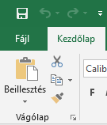
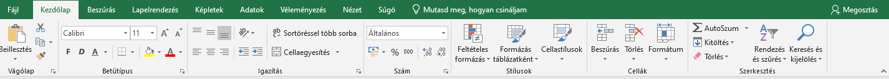
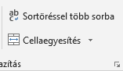
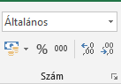
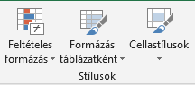
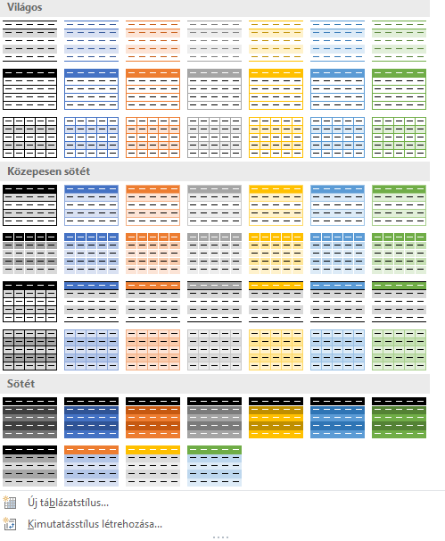
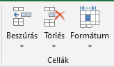
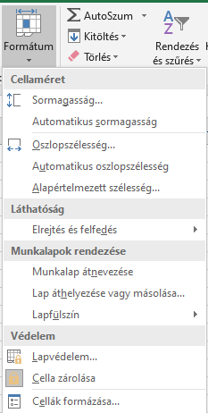

Bármilyen formázás előtt a legfontosabb a dokumentum elmentése melyet a bal felső sarokban lévő mentés ikonnal tehetünk meg.

Érdemes rendszeresen menteni mert a nem mentett munkánk bármilyen gond esetén elveszhet!
A mentés gombra kattintva megnyílik a mentés ablak, melyben ki kell választani a mentés helyét. Rákattintva a megfelelő helyre elnevezhetjük a fájlunkat és a mentés gomb segítségével elmenthetjük a kiválasztott helyre.
A kezdőlap az eszköztár alapértelmezetten megjelenő része.

Itt láthatjuk, hogy a zöld háttérben a kezdőlap szöveg háttere fehér, innen tudhatjuk, hogy most a kezdőlap részen vagyunk.
Ebben a részben vannak az Excel leggyakrabban használt funkciói:
- Vágólap
- Betűtípus
- Igazítás
- Szám
- Stílusok
- Cellák
- Szerkesztés
Sok funkció ismerős lehet, de szeretnék kitérni az újakra.

Igazítás résznél Cellaegyesítés.
Nagyon hasznos funkció ha több cellába szeretnénk hogy egy nagyobb adat jelenjen meg.
Sortöréssel több sorba esztétikai szempontból lehet hasznos ha nem fér ki az adatunk a cellánkba.
Szám menü funkciói

A felső legördülő menüvel a cellák formátumát tudjuk megváltoztatni. ilyenek például az idő pénznek százalék tört és egyéb formátumok.
Az alatta lévő gombok az ezen formák közötti leggyakrabban használtak kiemelt változatai
Ezek sorban a pénznemek közül a forint, a százalék, az ezres csoport hozzáadása, a tizedesjegyek pontosságának beállítása.
Stílusok

Ezek mind rengeteg funkciót tartalmaznak a kis nyíl segítségével, ezért érdemes őket kipróbálgatni gyakorlás közben.
A Feltételes formázás akkor változtatja meg egyes cellák stílusát ha teljesül az egyes feltétel.
A Formázás táblázatként a teljes táblázatunkat, azaz minden olyan cellát amiben van adat egy adott stílusúra állítja.
Rengeteg stílus közül lehet választani így általában válasszuk azt amelyik szimpatikus vagy passzol az adott témához.

A cellastílusok gomb pedig hasonlóan formázza meg mint a formázás táblázatként gomb de csak az éppen adott kijelölt cellákra.
Cellák

Cellákat, sorokat, oszlopokat tudunk beszúrni vagy törölni és a formátumban beállíthatjuk a sorok magasságát, oszlopok szélességét.
Emellett átnevezhetjük munkalapunkat és egyéb módokon formázhatjuk celláinkat.
